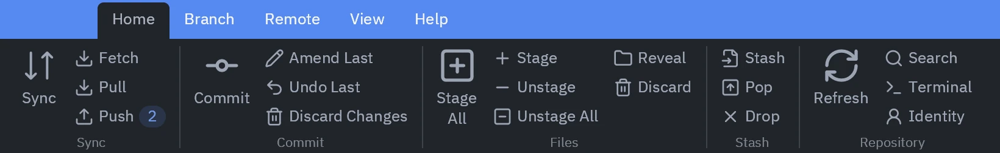
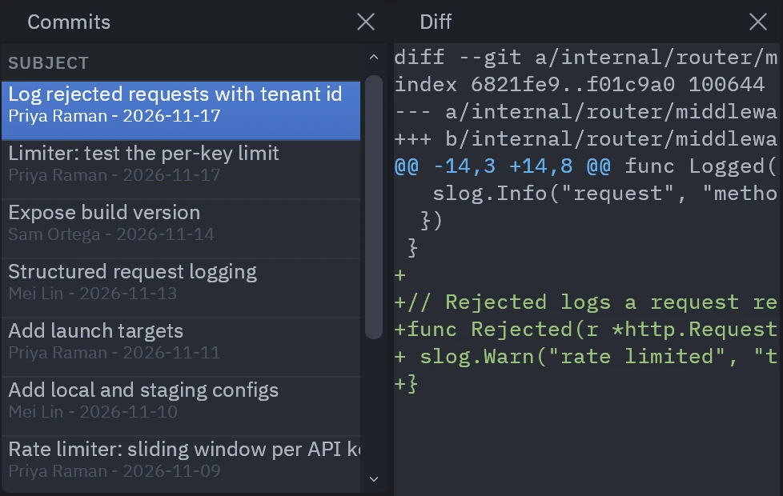
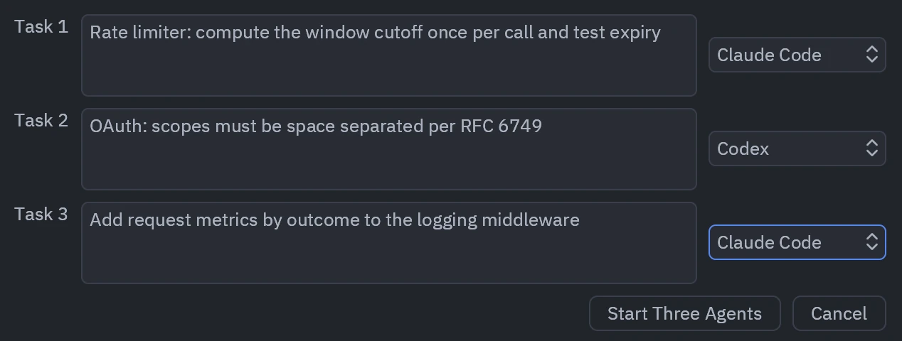
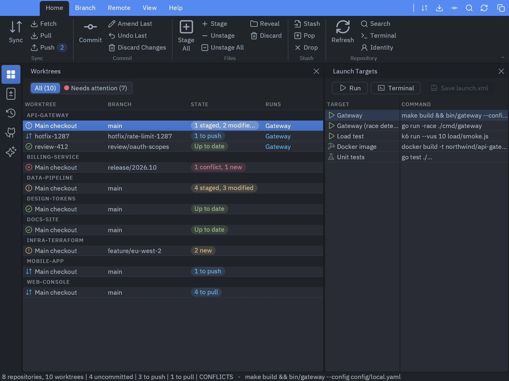
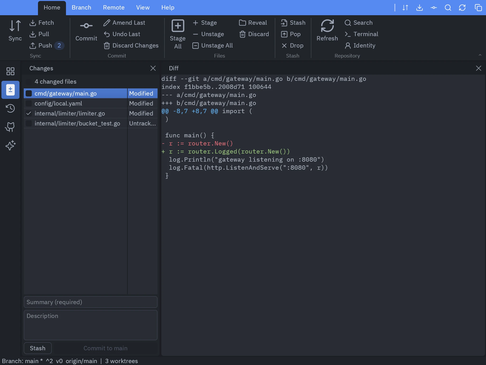
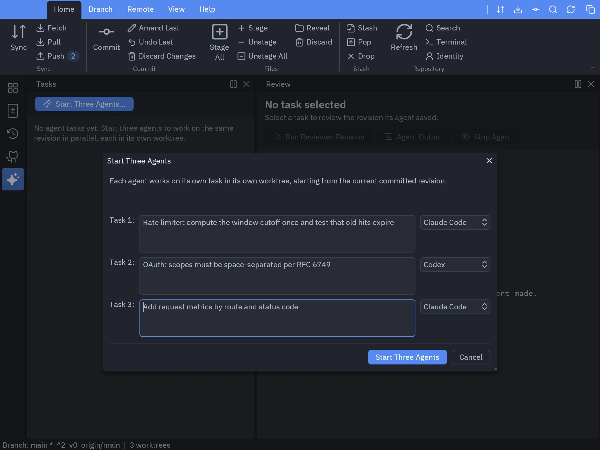
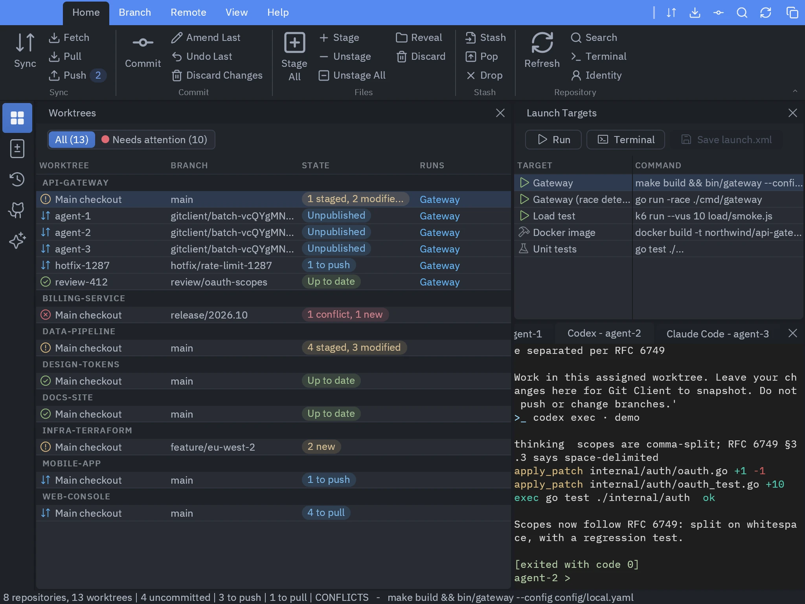
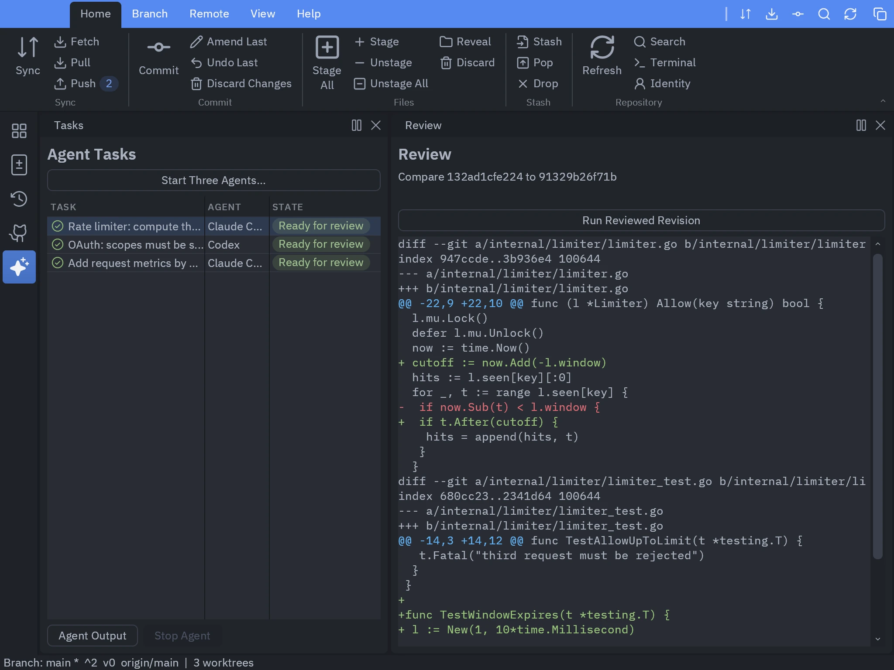
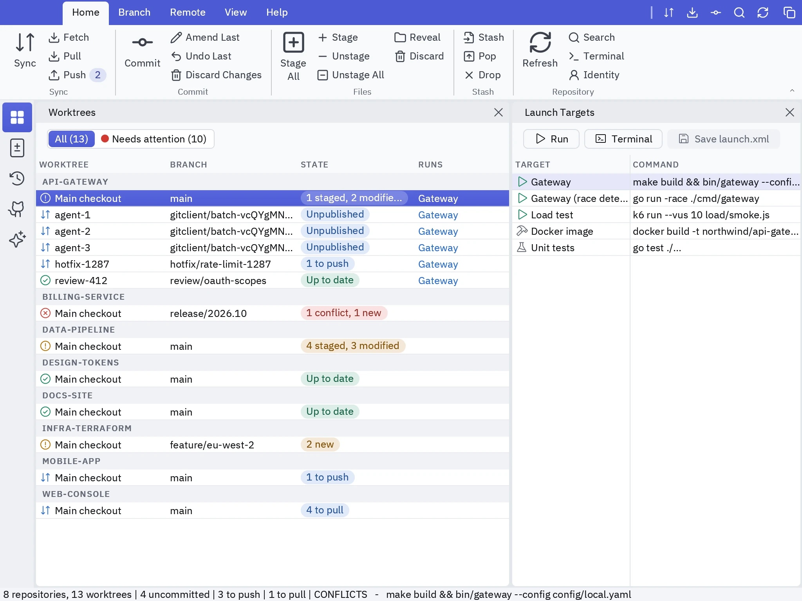

08:58
One glance at the whole workspace.
Overview lists every checkout of every repository, grouped by project. Each row says its state in words, and the icon gives the verdict.

Follow one platform engineer through her first hour — from “what did I leave behind?” to three agents finishing her backlog in parallel.
Overview lists every checkout of every repository, grouped by project. Each row says its state in words, and the icon gives the verdict.
Red for a merge in flight, amber for uncommitted work, blue arrows for commits to push or pull. Needs attention hides everything that's fine.
The ribbon groups Sync, Commit, Files and Stash. Every button is also a menu item with its shortcut — the menu tree is the map of the app.

Open the checkout and you land on Changes. Tick to stage, read the diff beside it; the button tells you what Commit will do.

The History sidebar is a branch desk: current, default, local and remote-only, with Prune and Delete Merged. Drag any pane anywhere.

On the Agents page she writes one task per row and picks Codex or Claude Code for each. Every task starts from the current commit.

A branch, a worktree and a live terminal per task. The new worktrees appear in Overview like any other; stopping one leaves the others running.

A successful run with changes is saved as a local snapshot commit on its task branch — something you can diff, run and keep.

The diff is against the original base. Run Reviewed Revision opens a detached worktree at the snapshot and starts the default target from its own launch.xml.







launch.xml is committed with the code. Parameters, env and build steps per target; guessed from your build files when it's missing.
Targets start in a PTY, so colours and progress lines look as they do in a shell. A failing target opens its tab for you.
A level added on a branch appears only in that worktree. The Overview row shows the default target.
make launch-check verifies every make target and file a launch.xml mentions.


Native on macOS and Linux, written in C on Orion UI.